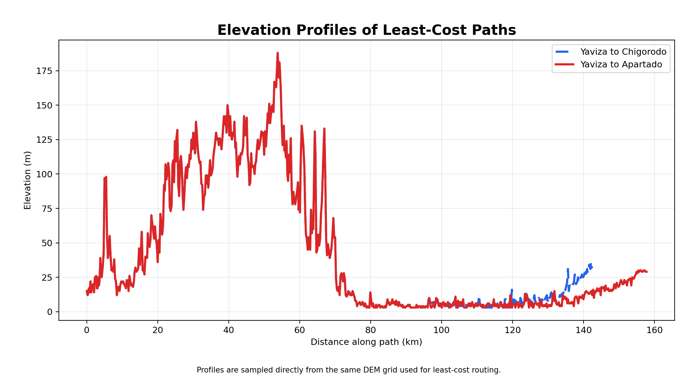
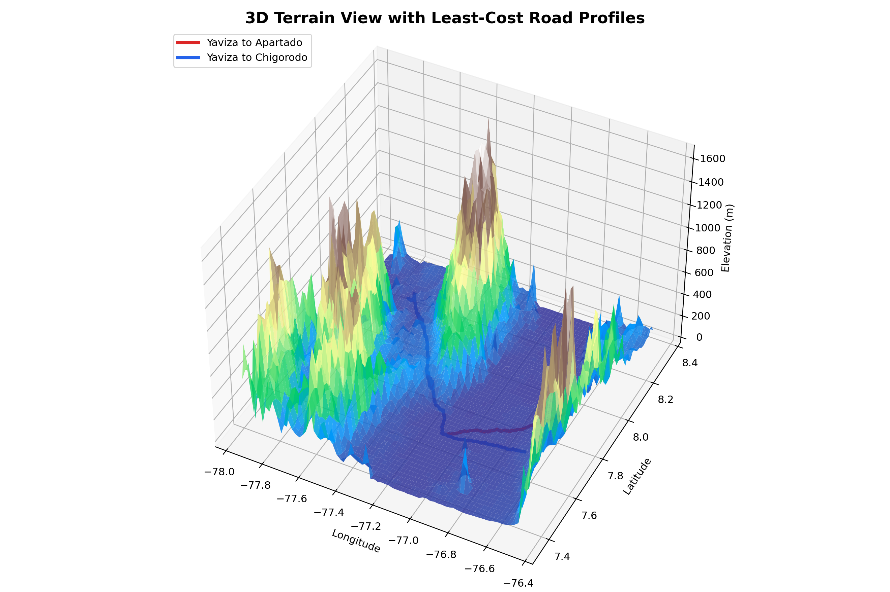

듀얼트랙 GIS 학습 프레임워크
Unit 06: Darién Gap 비용거리 분석
1. 과제 정의
- 해결 과제: Pan-American Highway의 단절 구간인 Darién Gap을 통과하는 가상의 도로 후보를 least-cost path로 탐색합니다.
- 출발지: Yaviza, Panama. 도착지: Apartadó, Colombia와 Chigorodó, Colombia 두 지점입니다.
- 비용 기준: terrain slope가 커질수록 비용이 비선형적으로 증가하고, 해수면 이하 또는 대형 수역으로 볼 수 있는 셀에는 큰 penalty를 부여했습니다.
- 제출 요구: 두 least-cost path 지도, 두 elevation profile, 하나 이상의 3D terrain view, 분석 결과와 다음 반복에서 필요한 추가 변수 설명입니다.
ArcGIS Pro 구현
Spatial Analyst 기반 비용거리 분석
DEM 병합 및 경사도 도출
분석 범위가 넓어 여러 DEM 타일이 필요한 경우 하나로 병합(Mosaic)한 후, 지형의 가파름을 나타내는 경사도(Slope) 래스터를 생성합니다.
비용 표면(Cost Surface) 설계
경사도가 높을수록 건설 비용이 기하급수적으로 증가한다고 가정하여 Reclassify나 Raster Calculator로 픽셀별 저항값을 할당합니다. 물(바다 등)에는 지나갈 수 없도록 막대한 패널티를 부여합니다.
최소 비용 경로 추적
출발지(Yaviza)를 기준으로 거리와 누적 비용을 계산(Cost Distance)한 후, 목적지(Apartadó 등)에서부터 물결을 거슬러 올라가듯 최소 비용 경로(Cost Path)를 그려냅니다.
🛠️ ArcGIS Pro 실전 운용 매뉴얼 (클릭 전개)
※ 지식창조자가 되기 위한 필수 관문: 도구 숙련도를 증명하기 위한 단계별 버튼 클릭 가이드 (계산기 매뉴얼 방식)
[Step 1] 지형 경사도 계산 (Slope) Analysis 탭 ▶ Tools ▶ 검색: Slope (Spatial Analyst)| Input raster | Darien_DEM (병합된 지형 데이터) |
|---|---|
| Output raster | Darien_Slope |
| Output measurement | DEGREE |
경사도에 비례하여 걷기 힘들어지는 비용(수식)을 적용합니다.
| Map Algebra expression | 1 + Power("Darien_Slope" / 8.0, 2.2) |
|---|---|
| Output raster | Cost_Surface_Base |
| Input source data | Yaviza_Point (출발지 레이어) |
|---|---|
| Input cost raster | Cost_Surface_Base |
| Output distance raster | Cost_Distance_Raster |
| Output backlink raster | Cost_Backlink_Raster |
| Input destination data | Destinations_Points (도착지 레이어) |
|---|---|
| Input cost distance raster | Cost_Distance_Raster |
| Input cost backlink raster | Cost_Backlink_Raster |
| Path type | EACH_CELL |
🧐 오퍼레이터의 마인드셋
- "경사도 계산 시 Z factor(수직 비율)가 수평 단위와 일치하는가?"
- "Cost Path를 돌리기 위해선 단순한 거리뿐 아니라 어느 방향으로 가야하는지를 알려주는 Backlink 래스터가 반드시 필요하다는 것을 이해했는가?"
- "출발지와 도착지 포인트가 DEM 래스터 영역 안에 온전히 들어와 있는가?"
Python 구현
DEM 샘플링, Dijkstra pathfinding, PDF 자동 생성
파이썬 프로그래밍 방식은 scikit-image(그래프 변환)와 scipy.sparse.csgraph(다익스트라 최단 경로)를 이용하여 복잡한 ArcGIS 도구 없이 배열 위에서 직접 네트워크 경로 탐색을 수행합니다.
배열(Array) 기반의 비용면 모델링
Numpy를 이용해 DEM 배열의 기울기(Slope)를 계산하고, 즉석에서 수학적 비용 공식 1 + (slope / 8)**2.2을 벡터 연산으로 한 번에 적용합니다. 바다와 같은 장애물은 np.where 조건문으로 비용을 무한대에 가깝게 치환합니다.
픽셀을 그래프(Graph) 노드로 변환
이미지의 각 픽셀을 교차로(Node)로, 픽셀 사이의 인접성을 도로(Edge)로 생각합니다. 파이썬에서는 이것을 거대한 희소 행렬(Sparse Matrix) 구조로 변환하여 메모리 낭비 없이 수천만 개의 픽셀 연결망을 정의합니다.
Dijkstra 알고리즘 실행
컴퓨터 과학의 고전적인 최단 거리 탐색 알고리즘인 다익스트라(Dijkstra)를 적용하여 출발 픽셀에서 모든 픽셀까지의 최소 비용을 탐색하고, 목적지에서부터 거꾸로 역추적(Backtracking)하여 좌표를 추출합니다.
👨💻 Python 코어 로직 해설 (초등 5학년도 이해하는 코드 읽기)
※ 지식 창조자의 무기: "클릭" 대신 컴퓨터의 두뇌와 직접 소통하는 방법. 파이썬 문법을 몰라도, 회색으로 적힌 한글 해설을 읽어보며 코드가 어떻게 흐르는지 감을 잡아보세요!
[핵심 로직 1] 기울기(Slope)를 통한 비용 계산수십만 개의 픽셀 높낮이를 옆 픽셀과 비교해서 찰나의 순간에 경사도를 구합니다.
내비게이션이 길을 찾듯, 픽셀 사이의 그물망에서 가장 적은 비용이 드는 루트를 찾습니다.
🧠 지식 창조자의 마인드셋
- "ArcGIS의 Cost Distance 도구 내부는 결국 그래프 이론(Graph Theory)과 다익스트라 알고리즘으로 이루어져 있음을 코드로 증명할 수 있는가?"
- "Numpy의 벡터 연산을 활용해 for-loop 없이 수십만 픽셀의 비용을 한 번에 계산(Broadcasting)하여 속도를 극대화했는가?"
- "지형의 해상도(셀 크기)가 두 배 조밀해지면, 그래프 노드의 개수는 네 배 늘어나며 길 찾기 연산량은 기하급수적으로 폭발함을 이해하는가?"
🎓 Final Results & Portfolio
Python Engineer Pipeline Output
Numpy 벡터 연산 및 Dijkstra 알고리즘 최적화 결과물
scikit-image와 scipy.sparse.csgraph를 활용한 고성능 비용거리 탐색 결과입니다. SRTM DEM을 사용하여 지형을 모델링하였으며, 157km의 Darién Gap 구간에서 최적의 도로 건설 경로를 제안하는 고급 엔지니어링 리포트입니다.

Darién Gap Least Cost Paths Map

Path Elevation Profiles

3D Terrain Paths View
📊 Pipeline Performance Logs
[INFO] Calculated slope and generated cost surface (188m max elevation)
[INFO] Route 1 (Yaviza to Apartadó): 157.7 km calculated
[INFO] Route 2 (Yaviza to Chigorodó): 142.5 km calculated
[INFO] Generated 3D plots, elevation profiles, and exported CSV manifests.
[INFO] 5-page PDF report regenerated from verified routes and arrays.